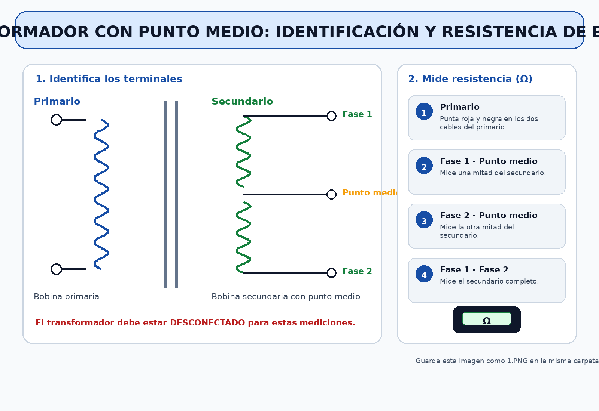
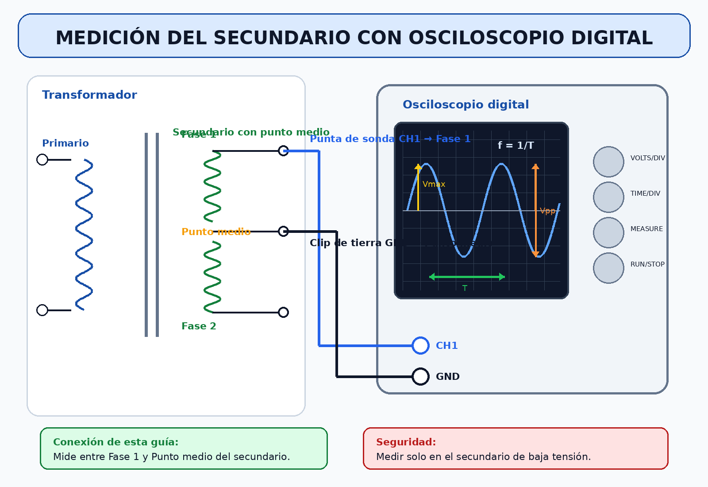

1Tu tarea concreta de hoy
Comprobar eléctricamente un transformador con punto medio y analizar la señal alterna del secundario con un osciloscopio digital.
Una hoja con mediciones de resistencia, amplitud máxima, voltaje punta a punta, período y frecuencia calculada.
Medir primario
Mide resistencia de la bobina primaria con la fuente desconectada.
Resultado: resistencia anotadaMedir secundarios
Mide Fase 1-CM, Fase 2-CM y Fase 1-Fase 2.
Resultado: tabla completaObservar señal
Conecta la sonda al secundario indicado y observa la onda senoidal.
Resultado: señal visibleMedir onda
Mide amplitud máxima, voltaje punta a punta y período.
Resultado: datos de pantallaCalcular frecuencia
Usa el período medido para calcular la frecuencia.
Resultado: frecuencia final!Seguridad antes de comenzar
La conexión del primario del transformador a 220 V debe ser revisada y energizada por el profesor. Tu trabajo directo será medir bobinas sin energía y observar el secundario de baja tensión.
Las mediciones de resistencia se hacen solo con el transformador totalmente desconectado.
2Imagen guía del transformador

Imagen generada: guarda el archivo 1.PNG en la misma carpeta del HTML.

Imagen generada: guarda el archivo 2.PNG en la misma carpeta del HTML.
3Primera parte: medir resistencia de bobinas
Transformador desconectado
Verifica que el transformador no esté conectado a ninguna fuente. El selector del multitester debe estar en Ω.
Medir bobina primaria
Coloca las puntas del multitester en los dos cables del primario. Anota la resistencia.
Medir Fase 1 con punto medio
Coloca una punta en Fase 1 y la otra en el punto medio. Anota la resistencia.
Medir Fase 2 con punto medio
Coloca una punta en Fase 2 y la otra en el punto medio. Anota la resistencia.
Medir Fase 1 con Fase 2
Coloca una punta en Fase 1 y la otra en Fase 2. Anota la resistencia total del secundario.
| Medición | Qué debería ocurrir | Interpretación simple |
|---|---|---|
| Primario | Debe mostrar una resistencia. | La bobina primaria tiene continuidad. |
| Fase 1 - Punto medio | Debe mostrar una resistencia. | Una mitad del secundario tiene continuidad. |
| Fase 2 - Punto medio | Debe mostrar una resistencia parecida a la anterior. | La otra mitad del secundario tiene continuidad. |
| Fase 1 - Fase 2 | Debe ser aproximadamente la suma de las dos mitades. | El secundario completo tiene continuidad. |
4Segunda parte: observar la señal alterna
Una señal alterna cambia de polaridad en el tiempo. En el osciloscopio se observa como una onda que sube y baja.
Amplitud máxima, voltaje punta a punta, período y frecuencia.
Revisión antes de energizar
El profesor revisa el transformador, la conexión y el punto donde se conectará la sonda.
Conectar la sonda al secundario
Conecta la punta de la sonda a una fase del secundario y la pinza de referencia al punto medio, según la imagen guía.
Observar la onda
En el osciloscopio digital, ajusta la escala vertical y horizontal hasta ver una onda estable y completa.
Medir valores
Lee en pantalla o mide con cursores: amplitud máxima, voltaje punta a punta y período.
5Qué significa cada medición
Amplitud máxima
Es el voltaje desde 0 V hasta el punto más alto de la onda.
Símbolo: Vmax
Voltaje punta a punta
Es la distancia vertical entre el punto más alto y el punto más bajo de la onda.
Símbolo: Vpp
Período
Es el tiempo que demora la onda en completar un ciclo.
Símbolo: T
6Organización de las 4 horas pedagógicas
AHoja de respuestas y autoevaluación
| Nombre: ______________________________ | Fecha: ____ / ____ / ______ |
| Curso: _______________________________ | Actividad: Transformador con punto medio |
1. Identificación de terminales
| Terminal | Lo identifiqué | Observación |
|---|---|---|
| Primario | ☐ | ______________________________ |
| Fase 1 del secundario | ☐ | ______________________________ |
| Punto medio | ☐ | ______________________________ |
| Fase 2 del secundario | ☐ | ______________________________ |
2. Medición de resistencia de bobinas
| Medición | Valor medido | ¿Tiene continuidad? |
|---|---|---|
| Primario | __________ Ω | Sí ☐ / No ☐ |
| Fase 1 - Punto medio | __________ Ω | Sí ☐ / No ☐ |
| Fase 2 - Punto medio | __________ Ω | Sí ☐ / No ☐ |
| Fase 1 - Fase 2 | __________ Ω | Sí ☐ / No ☐ |
3. Medición de señal alterna en osciloscopio
| Medición | Valor observado | Unidad |
|---|---|---|
| Amplitud máxima | __________ | V |
| Voltaje punta a punta | __________ | Vpp |
| Período | __________ | ms o s |
| Frecuencia calculada | __________ | Hz |
4. Cálculo de frecuencia
Escribe aquí tu cálculo:
5. Preguntas breves
¿Qué comprobaste al medir la resistencia de las bobinas?
¿Qué forma tenía la señal observada en el osciloscopio?
¿Qué aprendiste al medir el período y calcular la frecuencia?
6. Autoevaluación
| Pregunta | Sí | Con ayuda | No |
|---|---|---|---|
| Identifiqué los terminales del transformador. | ☐ | ☐ | ☐ |
| Medí resistencia con el transformador desconectado. | ☐ | ☐ | ☐ |
| Observé la señal alterna en el osciloscopio. | ☐ | ☐ | ☐ |
| Medí amplitud máxima, Vpp y período. | ☐ | ☐ | ☐ |
| Calculé la frecuencia usando el período. | ☐ | ☐ | ☐ |
Lo que me resultó más fácil fue:
Lo que debo mejorar para la próxima actividad es:
BPauta de observación del profesor
| Estudiante: ______________________________ | Fecha: ____ / ____ / ______ |
| Curso: _______________________________ | Puntaje: ______ / 30 |
| Criterio | Logrado 3 pts | Medianamente logrado 2 pts | En proceso 1 pt | No logrado 0 pts | Pje. |
|---|---|---|---|---|---|
| 1. Identifica terminales | Reconoce primario, secundario y punto medio. | Reconoce la mayoría. | Reconoce con ayuda directa. | No identifica terminales. | ____ |
| 2. Usa multitester en Ω | Configura y usa correctamente el multitester. | Corrige con ayuda menor. | Requiere apoyo constante. | No logra medir resistencia. | ____ |
| 3. Mide primario | Mide y registra correctamente. | Mide con error menor corregido. | Mide con ayuda directa. | No logra medir. | ____ |
| 4. Mide secundarios | Mide las tres combinaciones solicitadas. | Omite o corrige una medición. | Requiere apoyo frecuente. | No completa mediciones. | ____ |
| 5. Respeta seguridad | No manipula red eléctrica y espera revisión. | Requiere un recordatorio. | Requiere varios recordatorios. | Actúa de forma insegura. | ____ |
| 6. Conecta sonda | Conecta correctamente en el secundario. | Corrige con ayuda menor. | Requiere apoyo directo. | No logra conectar. | ____ |
| 7. Observa señal | Obtiene una señal estable en pantalla. | Obtiene señal con apoyo menor. | Requiere guía permanente. | No logra observar señal. | ____ |
| 8. Mide la onda | Mide Vmax, Vpp y período. | Le falta un dato o corrige uno. | Registra datos incompletos. | No mide la onda. | ____ |
| 9. Calcula frecuencia | Aplica correctamente f=1/T. | Corrige unidades con ayuda. | Requiere guía directa. | No calcula frecuencia. | ____ |
| 10. Reflexiona y registra | Completa hoja y responde con sentido. | Completa parcialmente. | Responde con mucho apoyo. | No completa la hoja. | ____ |
Observaciones durante la clase
Nivel de autonomía observado
| Alto ☐ | Medio ☐ | Bajo ☐ |